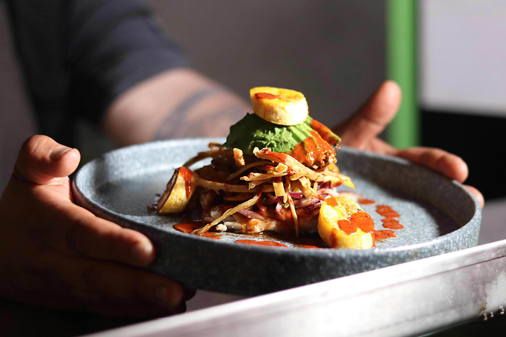

OUR STORY |
||
 |
Bombay Bliss was inspired from the childhoods of co-founders Bijaya and Nadgonde who were best friends living in the bustling city of Bombay. Their experiences in the streets of their homeland led to the idea of creating a sustainable and eco-friendly restaurant together in order to raise awareness to protecting the environment. Together, they share their heritage through cooking vegan/vegetarian Indian cuisine that nourishes the mind, body, and soul. By partering with local organic farms, the best friends make the first step into a more sustainable and healthy world. |
 |

Our Farm to Table Process
At Bombay Bliss, our farm-to-table journey begins with our strong partnership with our local farms, where we source the freshest produce for our blissful authentic dishes. We cultivate direct connections and positive relationships with these farmers, ensuring ethical and sustainable practices. Meanwhile, our aromatic spice blends originate directly from India, bringing authentic flavors to every plate. This blend of local and imported ingredients, combined with our traditional Indian cooking techniques and special recipes, results in a truly unique dining experience. From the fields of our local partners to the spice markets of India, and finally to your plate, we bring you the bliss of authentic Indian cuisine.
Our Preparation Process
Every meal at Bombay Bliss is ensured to be fresh, made with high quality ingrediants and diligant preparation to deliver an authetic and flavorful dining experience. Our restaurant believes that the heart of a delcious cusine lies on the quality and prearaton of ingrediants. Our local farms and partners carefully select the freshest, most vibrant organic produce, hand picking the best options ensuring maximum freshness and flavor. Our skilled chefs prepare each dish with respect for traditional indian flavors. Our chefs are trained in enhacing our unique preparation process. We invite you to experience the love and care that goes into each creation at Bombay Bliss.